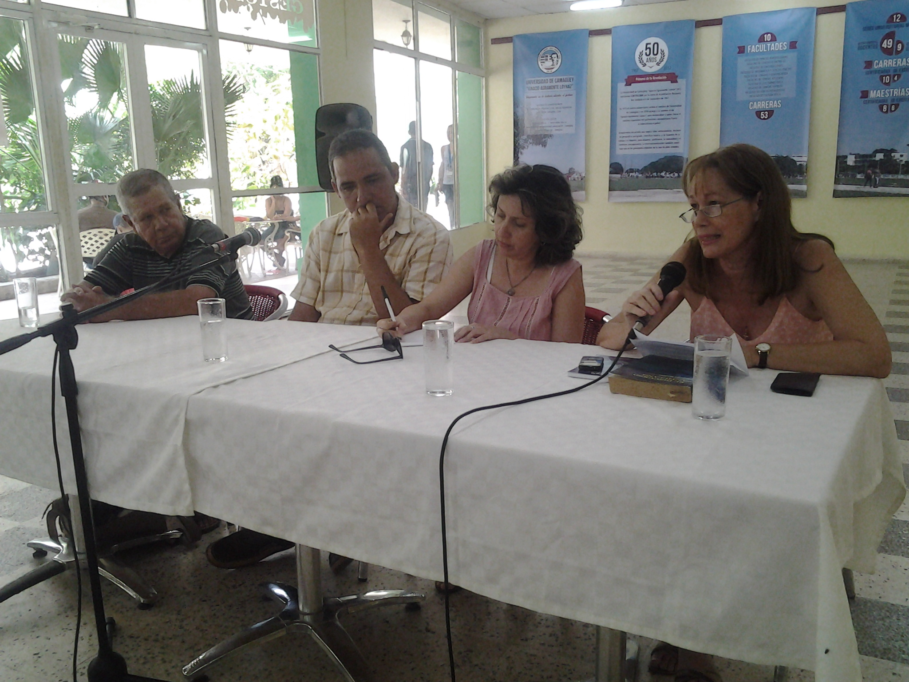
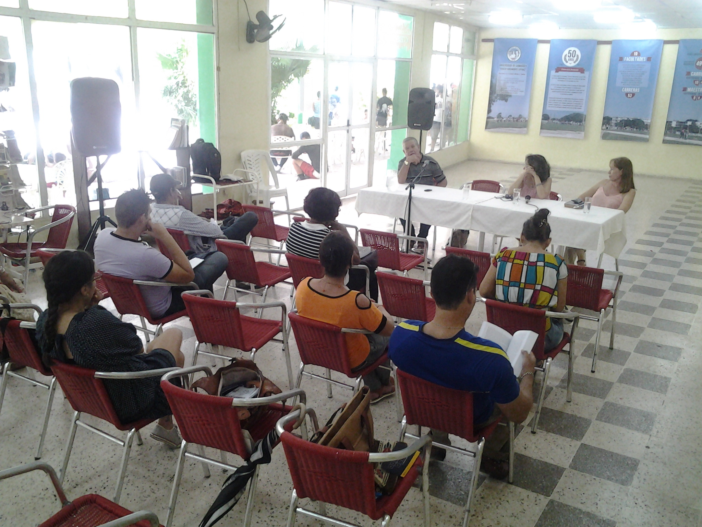
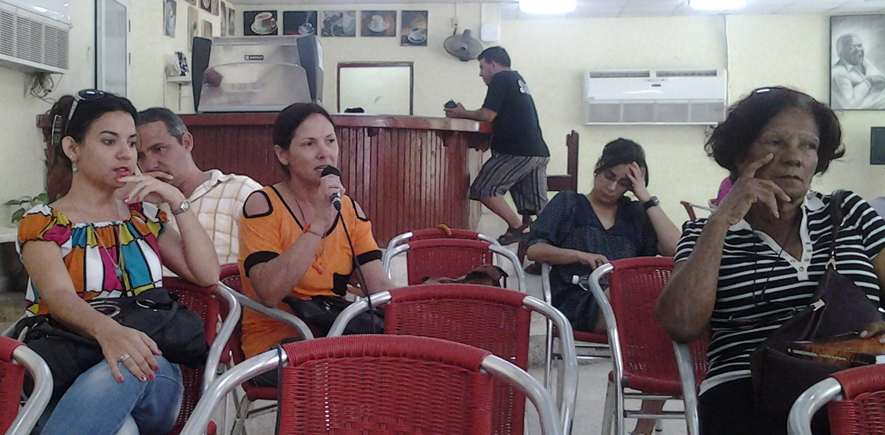
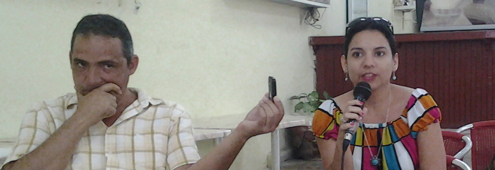

En la etapa de la república, no lo podemos negar, hubo emigraciones políticas porque Machado, por ejemplo, perseguía a la gente, hasta Grau tuvo que salir del país. No es lo mismo ser emigrante que ser exiliado, el exiliado es el que entra a una embajada y se acoge a un estatuto legal que existe y el gobierno autoriza, y el país que lo recibe está obligado a darle atención a ese hombre, a legalizarle los papeles, ese es el exiliado, que existe en América. En Europa no existe el concepto de exiliado ni las embajadas tienen obligación de otorgarlo, pero en América sí existe. El emigrante, que puede estar motivado por razones políticas, sale voluntariamente del país, legal o ilegalmente, pero por voluntad propia. Este emigrante político existió también en la república, yo tengo una tía que se fue en el año 45 para los Estados Unidos porque hacían falta trabajadores. Se tuvo que casar con un cubano que era ciudadano norteamericano, hizo eso y después salió. Fue a trabajar a los Estados Unidos, pues era usual que los cubanos fueran a trabajar a los Estados Unidos y muchos de ellos acumulaban un capital y regresaban; también los españoles pretendían esto cuando emigraban a Cuba, lo que pasa es que muchos no lograron sus sueños al igual que los chinos.
A partir del triunfo de la revolución esto tiene una connotación política: emigrado y contra revolucionario eran sinónimos. Incluso hubo personas que oportunistamente utilizaron el concepto de contrarrevolucionario para emigrar por problemas económicos. Hay diferentes oleadas, está la oleada del 59 que son los batistianos, algunos huyeron porque tenían cuentas pendientes con la justicia, habían asesinado a gente. Puedo decirles que el coronel de Camagüey, que se llamaba Leopoldo Pérez Cubire, era responsable del asesinato de la gente de Pino Tres, mataron once prisioneros heridos, allí sentenciaron a Suárez Tusque que era jefe de operaciones, pero el coronel se escapó, como se escapó Ventura, Carratalá y algunos esbirros. Junto con esta gente se fue un grupo de personeros civiles cómplices de Batista. Hay uno que era jefe de prensa de Batista que llegó a escribir un libro famoso que se llamó El gran culpable, allí le echaba la culpa de lo que estaba pasando en Cuba a Batista pues según él fue el que dio el pretexto para que Fidel Castro, que según él siempre tuvo manía de grandeza, ocupara el poder. O sea, no le echa la culpa a los terratenientes, a la no aplicación de la ley de reforma agraria, al nivel de analfabetismo que había, a la falta de hospitales, a la mortalidad infantil, a eso no le echa la culpa, es a Batista con su ambición personal.
Es indudable que después que se fueron esos se fueron otros, gente que eran profesionales, que eran ingenieros y a quienes las compañías norteamericanas les ofrecían trabajo, pues emigraron para conservar un estándar de vida cuyo mantenimiento en Cuba era incierto con todo lo que estaba pasando. Emigró también gente que le tenía miedo al comunismo o que era anticomunista. Este grupo no tenía finca, no tenía riqueza que perder, pero aspiraban a tenerla y sentían que el nuevo proceso les estaba quitando las vías para lograrla.

O sea, aquí hay emigraciones de todo tipo, y van a existir otras oleadas en la medida que se van intensificando el bloqueo y la guerra económica, a lo que hay que añadir los errores nuestros. Porque el hecho de que no haya comida en este país no es culpa de nadie: fue insuficiencia de las políticas aplicadas y lo puedo fundamentar. Nosotros fuimos productores de azúcar en la colonia, fuimos productores de materias primas y de azúcar en la república, y después lo seguimos siendo cuando entramos al CAME porque en la división internacional del trabajo lo único que nosotros teníamos que hacer era producir azúcar, por tanto la col venía de Hungría y los frijoles de Bulgaria. Aquí no había agricultura, después del año 63 cuando se aplicó la Segunda Ley de Reforma Agraria se acabó con la agricultura en Cuba y además en el medio del proceso aquel todos los guajiros querían ir para la Habana: desde los rebeldes que fueron con Fidel, los brigadistas. Cuando yo estuve en la Habana en el año 62 hubo gente que se quedó, como los becados que fueron para la Habana a vivir en los repartos de los burgueses, ¿quién va a virar para Guantánamo después de conocer el Vedado? Pero también creció el nivel cultural de la gente, nadie puede añorar lo que no conoce. Ustedes no le pueden echar de menos al Banderin, al coctel Del Monte, al Cresto un chocolate que había, ustedes no le pueden echar menos porque ustedes no lo conocen. Ustedes no han comido con aceitunas ni con pasas. Hace unos días discutía con una alumna que trabaja en el combinado cárnico y le decía: “Usted nunca ha comido carne, el picadillo que ustedes hacen no sirve. Usted no se da cuenta porque usted nunca ha comido carne, usted desde que nació está comiendo esa cosa”. Yo quisiera coger al que lo fabrica y meterlo quince días preso y darle picadillo por la mañana y por la tarde, porque esta provincia es de carne, de queso y de leche, y Guantánamo es de café y a Pinar del Rio usted va y hasta las viejas fuman tabaco, a nadie se le ocurre en Pinar del Rio ir a comprar tabaco a la tienda. Yo llegué a Baracoa con Olga Portuondo y le dije “Vamos a tomar café”. No hay cafeterías, en Baracoa a nadie se le ocurre salir a tomar café en la calle, pues todo el mundo tiene café en su casa. Le dije a un hombre: “Yo quiero café, chico”, y me respondió: “¿Cuántas libras quiere?”. Le dije: “Espérate, espérate, yo quiero tomar café”. Me piloneo café —pilonear es moler—, y me dio café puro; imagínense ustedes.
Las identidades son así, las regiones tienen sus características. Lo digo porque a veces en el imaginario de la gente surgen cosas, ideas. A los viejos por lo general se nos olvida lo malo, nada más nos acordamos de lo bueno: tuvimos una novia, fuimos a Varadero, qué luna de miel más rica, después nos pegaron los tarros pero de eso no hablamos. Eso mismo pasa colectivamente: se empieza a idealizar y hay gente que te habla de una república que no fue la que yo conocí. Yo vi a los niños durmiendo en la calle, bañándose en los ríos porque no podían entrar al Tennis Club, las personas fajadas para coger periódicos para vender porque a un periódico se le ganaba un kilo y a una Bohemia un medio y había que salir a vocear por todas esas calles. Entonces la gente me habla de una república que no fue la que yo vi. Mi padre era de la compañía que distribuía jabón Palmolive, Colonia 1800, jabón Candado, pasta Colgate, allí nunca faltó el salario y todos esos productos, pues en aquel tiempo había una jabita para los empleados, para que no fueran a robar allí. Lo que quiero decir es que la nostalgia nos hace ver una república que realmente no existe.
Ahora, ¿qué ha pasado en los últimos años? Bueno, a medida que usted crece intelectualmente sus necesidades se vuelven más complejas. A una gente analfabeta usted le da comida y todo está bien, pero ya a medida que usted empieza a tener resuelto un grupo de problemas y ya usted tiene casa y nadie lo va a desalojar, que usted tiene escuela, derecho a la Universidad, trece vacunas puestas, dentista… Entonces sus problemas comienzan a ser otros. Quiero un carro, un aire acondicionado… Y si a eso usted le suma la insuficiencia del proceso que no te deja vislumbrar a ojos vista la solución de un grupo de problemas, usted dice: “Bueno, aquí no hay salida, tengo que irme”. Y la juventud no se siente comprometida con el pasado, no se siente comprometida con los errores del pasado, a veces decimos “nosotros”; no, nosotros no, a mí nadie me pidió permiso para aplicar la ley de reforma agraria. Si yo soy cómplice de algo es de creer que lo que se estaba haciendo era lo correcto, lo inteligente.
Cuando se despenalizó el dólar yo dije: “Esto está mal”. Había que hacerlo, no había alternativa, pero yo me imaginaba lo que iba a venir, cuando toda la gente que tenían parientes en el extranjero y eran gusanos se convirtieran en mariposas y el tipo que no trabajaba viviera mejor que tú que eras médico y hacías trasplantes de riñones. Ahora, este no es un problema de Cuba, es un problema mundial, el Sur se está mudando para el Norte, está virada al revés la ley de gravedad, en vez de caer ahora la gente sube. Pasa con los mexicanos, salvadoreños, guatemaltecos, que nunca han tenido ley de ajuste cubano y siguen metiéndose por los túneles, siguen cruzando el desierto, pero pasa en África, pasa en Tailandia, pasa en China, es lo que decía Pico: el problema de la emigración es un problema mundial, pero es del Sur hacia el Norte. Hay que ver las raíces y es que el Norte tiene un capital que construimos nosotros y ahora los países industrializados abandonan sus antiguas posesiones y algunas de ellas con guerras, con hambrunas, entonces esa gente no se van a quedar tranquila, es preferible cruzar el Mediterráneo en un palangana o en una batea que morirse de hambre en Sudán del Sur. Nadie se va de su país si las condiciones económicas políticas y sociales son las correctas, todo lo contrario, va de vacaciones y regresa como normalmente debe hacerse.
En nuestro caso hay que pensar que Estados Unidos, en su confrontación política con Cuba, tomó la decisión de hacer una Ley de Ajuste Cubano, pero el cubano no es cualquier emigrante. El cubano va con trece vacunas, el que menos va con el preuniversitario aprobado, muchos hablan inglés y otros son graduados de nivel superior. Comparen ese emigrante con un salvadoreño que no sabe leer ni escribir, acabado de salir de la selva. Si a ello sumamos las relaciones históricas que unen a ambas naciones, tenemos que aceptar que para los Estados Unidos es una garantía recibir a un emigrante cubano y no a un mexicano o a un salvadoreño, porque yo recuerdo que cuando la operación Milagro hubo gente que vio la luz eléctrica cuando llegó al aeropuerto para venir a Cuba y no habían aprendido estando en nuestro país a defecar en los servicios sanitarios. Es ese emigrante el que muchas veces se marcha a los Estados Unidos.
Sin duda alguna la emigración se ha incrementado en nuestra sociedad porque usted sabe que lo que es prohibido siempre es lo más rico. Eso es así. ¿Durante cuántos años los cubanos no pudieron salir?, ¿durante cuántos años estuvimos diciendo que aquello era malo? Bueno, la gente quiere ir a saber si de verdad es malo, porque además viajar da cultura, usted viaja y la cultura le entra por los poros, siempre aprende algo y la gente quiere viajar, en primer lugar por el derecho que tiene y que siempre he defendido: si usted quiere ir al Polo Norte a venderle helado a los esquimales es un problema suyo, no es un problema estatal, después usted regresará o se quedará o vendrá de vacaciones.
Mi familia es igual a todas las familias cubanas, tengo una hija que vive hace quince años en Argentina, un sobrino en Moscú y que se hizo medico aquí, tengo otra sobrina que vive en Estados Unidos, otro primo que es médico y tiene una clínica en Santo Domingo, o sea mi familia, como la de casi todos los cubanos, está dispersa, esta es una etapa, después vendrá otra que es la del regreso de la gente con su capital, con sus recursos, hay gente que está comprando casa porque dicen que se mueren aquí. Esa será otra etapa.
Yoan Pico: Aprovechando este paréntesis, ¿podríamos hablar de una circularidad en la relación de Cuba con su emigración?, ¿hay un acercamiento real entre Cuba y sus migrantes que favorezca ese regreso que hoy valoramos como una opción y que a mi modo de ver es la salvación de nuestro país? Cuba ha tenido unéxodo migratorio tan fuerte que si esas personas que se fueron, como tú bien dijiste, porque no vislumbraron un futuro, o su futuro, el que les exigía su concepción de la vida, si esas personas, decía, no regresan nos jugamos un agravamiento del envejecimiento poblacional que puede tener muchas causas pero indiscutiblemente esta es una.
Quería insistir en eso, en qué medida nos relacionamos con nuestra comunidad migrante y si esa relación es normal. Lo que está pasando hoy en Turquía es aleccionador en este sentido, es increíble como Erdogan se pelea con Alemania, con Holanda, por la sencilla razón de que no lo dejan dar un discurso delante de su comunidad migrante que él considera tan vital como la que tiene adentro.
Ayer hablamos del deporte, a muchos de nosotros se nos aguó la boca con el llamado equipo unificado al Clásico del 2021, sin embargo salió una nota en la prensa diciendo que el famoso equipo unificado no va. Pensemos en el plano simbólico la fuerza que tendría ver jugando a los de aquí con los de allá, sin embargo se rompió el puente: en el 2021 no habrá cubanos de aquí y cubanos de allá hermanados a través del deporte nacional, eso tiene sus lecturas.

Entonces por otra parte nos asombramos y agradecemos que parte de la rectificación de la política exterior de los Estados Unidos haya obedecido a un cambio de mentalidad de los cubanos de allá que de pronto quieren acercarse, sin embargo, ¿estamos listos para ese acercamiento?, ¿lo deseamos de verdad? Entonces hay corrientes de doble sentido que no posibilitan este acercamiento de manera cultural, porque también hay una historia de vínculos en este sentido.
Recordábamos hace un tiempo al camagüeyano Carlos Victoria, su cuento La franja azul, es todo un sondeo en las consecuencias sicológicas de la emigración. ¿Estamos estudiando esa producción literaria generada por la emigración?, ¿cuenta de verdad para nosotros? Pero no solo eso, hace un tiempo hablaba con una persona que me comentaba sobre esa tendencia de los cubanos en Miami a construir chalets. En Estados Unidos obviamente las casas no son nuestros chalets, hablo por supuesto de nuestra degeneración del concepto: dos cuartos, baño intercalado y placa. Pues bien, hasta ese punto llegan los vínculos culturales. Entonces me gustaría que por allí fuera el debate.
Francisco Luna: Yo pienso que la ignorancia es audaz. Los ignorantes dicen las barbaridades más grandes echándose fresco. ¿Quién puede decir aquí lo que va a pasar en el año 2021? Estamos en el 17, faltan cuatro años y nadie sabe lo que va a pasar en el 2021, porque Raúl sale en el 2018. ¿Quién asumirá el gobierno? No sabemos, no sé si Díaz Canel, si la gente vota por él, no sé. Yo no sé si las personas en los diferentes niveles de dirección han interiorizado el concepto de revolución que dio Fidel: “cambiar todo lo que debe ser cambiado”. Yo soy fidelista, para mí Fidel es un tipo excepcional, como Martí, no hay otro, ganó una guerra contra 80 mil soldados, resistió un imperio cincuenta años, el más fuerte del mundo, más grande que Roma, y llegó siempre hasta el límite del conflicto porque sabía que una guerra con Estados Unidos lo desbarataba. Fidel era otra cosa, Fidel era la encarnación del imaginario libertario de Cuba, un tipo audaz, valiente personalmente, que dio el ejemplo, educó a una generación. Pero ahora la mentalidad es otra. ¿Cuántos años de vida le quedan a Raúl? Estoy hablando de la realidad.
Los cambios que se van a producir desgraciadamente van a ser muy acelerados, y no es que nos vayamos a volver capitalistas: creo que la gente ha aprendido mucho, y va a aprender con los golpes. Hay gente que se fue para Estados Unidos pensando que iba a recoger el dinero con pala y ahora sé han dado cuenta que no es así. Estoy hablando a partir de mi experiencia familiar. Ahora, si se crean otras condiciones, si los cubanoamericanos pueden invertir en Cuba, si pueden vivir allá y tener negocios aquí, claro que el país tiene que cambiar, eso es inexorable, contra las leyes de la Historia nadie puede ir. Y si nosotros permitimos que los ingleses inviertan o que inviertan los franceses, por qué no permitir que un hijo nuestro que está en los Estados Unidos y tiene familia en este país también invierta, qué lógica me dice a mí que no.
Los gobiernos tienen que ocuparse de otros asuntos y tiene que haber una descentralización del país. Tenemos que subirle el salario a los cuadros también, es cierto que la gente dice que son ineptos, pero quién va a desempeñar esas funciones por trescientos pesos de salario. Solo los ineptos que son incapaces de ganarse la vida en la calle pueden ir a trabajar allí. Estoy hablando de esta forma porque son esos los que después nos afectan a nosotros. ¿Quién va ir a trabajar por cuatrocientos pesos para no dormir? No puede ser, hay que pagar mil pesos por hacer eso, pero cuando lo coja por corrupción le echo quince años. Ese es un problema serio en cualquier país, hay países como México que se han puesto ingobernables porque la corrupción ha penetrado desde el presidente hasta los jefes de la policía y nosotros no podemos llegar a eso porque perdemos el país y no estoy hablando de socialismo, estoy hablando de la seguridad de las personas, del futuro.
María Antonia Borroto: Antes de referirme a estas últimas cuestiones voy a conectarme un poco con lo que dijo Beatriz. Hay una cuestión que esgrime un filósofo alemán, Wolfgang Welsh, quien habla del multiculturalismo como una condición de las culturas contemporáneas, una condición incluso de las culturas en sentido general. No puedo detenerme en eso, en aras, precisamente, de no hacer muy larga esta explicación. Pero sí debo aclarar que una concepción cerrada de las culturas —verlas como zonas compartimentadas y estancas—, condena y hace vana cualquier comprensión de estos fenómenos. Agradezco mucho la referencia a España y al mestizaje en España porque la esencia misma de todos los países hoy en día es provenir de estas mezclas y de todos esos ingredientes que se fueron añadiendo. Nosotros mismos somos híbridos culturales, otro de los conceptos manejados por los estudios culturales en la contemporaneidad.
Esto es esencial para comprender cualquier cultura hoy en día pero sobre todo la cultura cubana. Siento que sobre todo en los estudios históricos y en los estudios culturales hemos desestimado, insisto, algunas de las fuentes de las que se ha nutrido la cultura cubana. Por ejemplo, sobre la cuestión hebrea y la importancia de lo hebreo en la cultura cubana desconocemos muchísimo. Pude acceder a una investigación sobre las prácticas musicales en los cultos judíos y me quedé asombrada con las tablas y estadísticas allí incluidas sobre las distintas oleadas, debidamente caracterizadas, de los hebreos a Cuba y el abandono al que toda esta tradición se sometió una vez triunfada la Revolución. Es decir, cómo algo que fue una fuente en un momento determinado después prácticamente se retira de la cultura cubana. Todos estos flujos aportaron muchísimo sobre todo a la configuración de los pueblos pequeños. Yo soy de Esmeralda y allí había muchísimos inmigrantes, a algunos se les llamaba “polacos” y en realidad eran muchas veces descendientes de árabes. Esa es otra zona que también desconocemos: la influencia de los árabes en la cultura cubana y sobre todo en la configuración, quizás no ya de las grandes ciudades —aunque también—, sino de esa zona que yo siento que está muy indefinida en los estudios culturales cubanos que son los pueblos pequeños. Los estudios se centran en lo agrario o en las zonas urbanas desestimando por completo a los pueblos pequeños.
La familia cubana vive esos procesos hoy en día. En donde muchos ven una suerte de xenofilia, yo siento que hay también mucha xenofobia y que es muy innatural la manera en la que nos relacionamos con el extranjero como consecuencia precisamente de todas estas prácticas postrevolucionarias. El mejor amigo que tenía mi papa cuando pequeño era un jamaiquino, pues se crió en un central azucarero. Allí estaban los norteamericanos que quizás no se mezclaban con todas las personas que vivían en el batey. También estaban los jamaiquinos que se distinguían por todo lo que Luna acaba de explicar. Y la relación fluía con una naturalidad tremenda. En Esmeralda convivían los llamados “pichones de haitianos” —conocí muchos haitianos que estaban allí como mismo estaban los descendientes de hebreos y demás—. Y esa frase no era peyorativa, o no era por una cuestión racial, pues estaban los pichones de gallegos, por ejemplo, o de isleños, referido esto último a las Islas Canarias. El periodo revolucionario solo nos ofrece una práctica parecida a esa que pudo experimentar mi papá: la que vivimos en cierto momento con los campamentos de pioneros, aunque eran totalmente artificiales y funcionaban como una especie de burbuja, pues allí todo pasaba por el tamiz de las organizaciones políticas y el extranjero con el que solías contactar provenía de los países del llamado campo socialista.
Hoy en día la relación con el extranjero se torna tremendamente rara, tremendamente dañina. Y me pregunto hasta qué punto esas relaciones están signadas por la xenofilia o por la xenofobia. Una cosa es clara: en ellas no hay contacto humano, la relación esta mediada por ver, muchas veces, qué le puedo tumbar a este, el traidor que devino traedolares —como dice una amiga mía—. Es una de las cosas que ha lastrado mucho nuestra relación con los comunitarios, así los llamaba yo cuando niña. Muchas veces tuve que cortarles las etiquetas a la ropa para que no se supiera que me las estaban mandando “los apátridas” que formaban parte de mi familia.
Ciertas generaciones de cubanos han vivido procesos muy traumáticos y no conciben que pudiera existir un país donde funcionara una única moneda y que con esa moneda tú pudieras resolver prácticamente tus necesidades vitales. Si a ello sumamos esta supuesta apertura que estamos viviendo ahora pues tenemos que considerar como muy lógico que se nos formen pequeños cortocircuitos en la cabeza, sobre todo por esos comportamientos y prácticas que en estos momentos se pretenden que sean muy naturales, pero que fueron prohibidas e incluso casi señalizadas en sitios como este.
Pero a veces pensamos que el extremismo ha estado solo del lado de acá. Conozco una señora que una vez me dijo: “Los CDR de allá son perores que los CDR de acá”, refiriéndose a esos comportamientos que hacen muy complicada la relación cultural verdaderamente armónica que debiera existir en estos momentos, por no hablar de lo castrante que puede resultar no poder leer todo lo que publican los escritores cubanos que han emigrado, incluso los que han nacido allá, pues no por eso dejan de tener una visión interesantísima de la realidad cubana. En otras manifestaciones como la música creo que se ha avanzado más en este conocimiento.

Beatriz Goenaga: Yoan reflexionaba sobre la necesidad de que esa emigración nuestra regresara a Cuba una vez que el país se tornara más atractivo para ellos. Me quedé pensando en eso desde el punto de vista de los procesos identitarios. El emigrado siempre ha sido descrito como un ser escindido, un ser fracturado, una persona que se debate entre sus raíces culturales a las cuales no renuncia y lleva consigo doquier vaya, y esa cultura que asimila y a la cual debe adaptarse si quiere sobrevivir. Muchas de las migraciones que han ocurrido hoy en día del Caribe y de América Latina hacia el Norte han estado motivadas —como el profesor explicaba— por un factor económico, pero una vez que esas personas se asientan y encuentran una solución a sus problemas no regresan. He leído artículos interesantísimos de mexicanos nacidos en Estados Unidos, donde cuentan que cuando un niño se enferma lo llevan al curandero porque esa es su tradición, pues en México el curandero es una figura importantísima y tú puedes ser un mexicano asentado en Estados Unidos desde hace tres generaciones y sigues llevándole a tu hijo, como mismo si eres cubano lo llevas a que le curen el empacho. Sin embargo, ¿regresarían estas personas?, ¿renunciarían a sus comodidades?, ¿pesaría más la nostalgia? El regreso podría estar dado por una necesidad también económica: invertir, quizás encontrar en Cuba una plaza donde realizar ciertos proyectos y sueños que en un país donde todo está inventado no pueden llevar a cabo. Me quedé pensando en eso y por supuesto no tengo la respuesta, pero quería sencillamente agregarlo porque puede suceder, como mismo puede crearse un ir y venir, tal como sucede en el resto de los países de Latinoamérica. Eso sería genial, porque nuestros países deben abrirse al mundo, eso es un pensamiento martiano, recuerden, “injértese en nuestras repúblicas el mundo…”; en efecto, estamos hablando de proteger nuestros valores identitarios, pero abiertos al mundo.
Yoan Pico: Si, ha sido un proceso doloroso. No tengo las estadísticas, pero sí la mitología popular: llegó a hablarse de vuelos repletos de alumnos de la UCI, por ejemplo. Porque eso es lo triste, tuvimos la capacidad de ver que hacía falta formar profesionales, se invirtió mucho en eso. Dicen —no me hagan caso— que esa primera graduación de la UCI fue muy cotizada en el mundo entero. La Revolución ha creado una riqueza, eso es innegable. En “Suite Habana”, de Fernando Pérez, esos personajes que sufren una realidad porque tienen una sexta visión, un sexto sentido creado por la revolución. Esa es la gran contradicción, se crea la riqueza y después no sabemos qué hacer con ella, no sabemos cómo canalizarla. Concuerdo con María Antonia: reflexiones sobre lo desgargante que han sido todos estos procesos hay miles. Ayer el escritor Abel Prieto, me gusta llamarlo así porque lo considero un escritor que después devino ministro, hablaba de algunos miembros de su generación y curiosamente a Carlos Victoria le aplicaba el término diluido. Carlos Victoria fue un escritor camagüeyano que llegó a los Estados Unidos vía Mariel y allá llegó a ser redactor del Miami Herald y un escritor de cierto éxito. Él llegó a hacer lo que la crítica ha denominado un Miami literario, es un caso bastante raro, los escritores cubanos por lo general llegan a los Estados Unidos y se apagan. Antes que anochezca es una prueba de ello, una prosa ágil, emotiva, pero solo cuando describe pasajes cubanos, una vez que Reynaldo Arena llega a Miami sentimos que todas esas pulsaciones se apagan. Con Carlos Victoria no sucede esto. Su cuento «La franja azul» lo ilustra muy bien. Narra las peripecias de un hombre que se reúne con una prostituta y no puede hacer el amor porque el televisor de la habitación tiene una franja azul que le impide concentrarse y, más tarde, hacer cualquier cosa en su vida. Uno al final comprende que esa franja es un símbolo del mar que separa a Cuba de Miami. La moraleja es sencilla, para incluso reflexionar sobre nuestra situación nos hace falta la reflexión del otro, porque la identidad es eso, ninguna cultura está completa, necesita otra mirada. Tú hablabas sobre la producción literaria de los cubanoamericanos y yo pensaba en un trabajo de un niño que leí gracias a ese invento tan magníficamente identitario que es Facebook: el muchacho está viendo la percepción que cada uno de los integrantes de su familia tiene de Cuba, cómo reacciona cada uno cuando escuchan hablar de la Isla, el abuelo que reacciona apasionadamente, el padre que lo hace con indiferencia y él que se siente atraído por Lincoln y por Martí, esa mixtura que ya forma parte de ellos y también de nosotros.
Joel Victoria: Actualmente en Estados Unidos hay visiones antropológicas que están hablando de la fragmentación de todo tipo que sufrieron los emigrados cubanos de los ochenta la llegar a allá, una fragmentación muy fuerte que no sufrieron en igual medida los emigrantes de la década del noventa que sí iban con un consenso de la doble moneda que los acercaba más a las prácticas del capitalismo, pero la gente de los ochenta no, esa emigración llegaba con una concepción netamente socialista, de patria o muerte, o sea, con un consignatario que no fue el de los años noventa y actualmente es una generación nula, no saben ni vivir allá, ni cómo vivieron acá.
Francisco Luna:
Yo creo que hay que ser abierto y pensar en grande.
Beatriz pregunta si volverán. Todos no volverán.
Económicamente Israel es insuficiente. ¿Cómo
se mantiene? Con la comunidad de judíos que vive
en los Estados Unidos. El lobby hebreo en Estados Unidos
es el más fuerte y son tan recalcitrantes como si
vivieran en Jerusalén y no quieren volver a vivir en
Jerusalén, no quieren. Entonces hay muchos cubanos que
no van a regresar a Cuba, vendrán de vacaciones,
algunos ni querrán venir porque les recuerda
cosas malas, porque ha habido cosas malas aquí,
pero también allá. Yo recuerdo una discusión
que se produjo entre Pablo Milanés y Edmundo García,
donde Pablo dijo que él sí le cantaría a
las damas de blanco porque él no tiene miedo y Edmundo
le responde que donde hay que ser valiente para decir
las cosas es allá, porque en Cuba no te ponen una
bomba y allá si te la ponen, entonces la
intolerancia ha sido allá y aquí, y eso
crea un clima, tanto allá como aquí. Los
Van Van tuvieron problemas, quemaron cuadros de Mendive,
a Buena Fe le suspendieron un contrato, o sea, han sido
intolerantes allá porque los sectores más
conservadores de la emigración son lo que han
controlado la política. La Florida tiene 67
condados, pero el que manda es Dade, es donde está
Miami y de los dos millones y pico de personas que lo
habitan el treinta por ciento es cubano, pero de ese
treinta por ciento, ¿cuántos quedan de la época
de Batista?, ¿cuántos quedan que eran dueños de
centrales? Quedan los hijos, los Díaz Balart y
eso, pero cada vez son menos, y cada vez son más
los que dejaron al padre y a la madre aquí y los
que ansían ayudar a su familia o invertir aquí
su dinero o venir de vacaciones a un país seguro,
tranquilo, donde recuerdan su infancia. Esos son
procesos que se van a dar naturalmente a medida que
vayan bajando las tensiones allá y acá, y
en la medida en que esos recalcitrantes de allá y
de acá vayan desapareciendo porque indudablemente
que hay gente que ha vivido de esto allá y aquí,
esa gente va desapareciendo y se va estableciendo un
flujo normal de artistas, de deportistas, de familias.
Para nosotros ha sido una desgracia vivir frente a los
Estados Unidos, nosotros siempre nos hemos comparado con
ellos; a ningún cubano se le ocurre compararse
con los peruanos, ver cómo se vive en Lima, cómo
se vive en Bogotá, a nadie le interesa eso, pero
todo el mundo sabe cuál es el último
pitusa que salió, cómo se usan las gorras,
las zapatillas. Una vez me dijo una investigadora
española: «Ustedes tienen obsesión con los
Estados Unidos». Y yo le dije: «Y ustedes con los
ingleses, han vivido toda la vida en guerra con los
ingleses, hablando mal de los ingleses».
Es así, la historia es así, las relaciones
son así, pero de algo usted sí puede estar
convencido: nadie, lo dijo Fidel, podrá detener
la marcha de la historia. El socialismo de ahora no es
el socialismo que va a haber, y yo quiero socialismo
porque he viajado por América Latina y he visto el
capitalismo, en México, en Perú, lo he visto y el
capitalismo no ha resuelto el problema de las grandes
mayorías: el hambre, la miseria, el
analfabetismo, los corruptos de aquí son
peseteros comparados con los ladrones políticos
de allá, yo no quiero eso para Cuba. Yo quiero
justicia social, igualdad de oportunidades,
tranquilidad, que no haya drogas, que no haya prostitución
infantil, eso es lo que yo quiero, ese sistema social,
de bienestar es a lo que nosotros aspiramos y va a ser
hasta ahora socialismo. Yo le decía el otro día
a un filósofo: «Ven acá, chico, hay algo
escrito que yo no he visto, porque yo oigo hablar de un
socialismo cubano, el único socialismo que yo
conozco es el que describe Lenin en El estado y la
revolución, porque ni Marx habló de
socialismo, el único que escribió la etapa
de tránsito fue Vladimir Ilich, entonces, ¿hay
algún teórico cubano que ha descrito cómo
va a ser nuestro socialismo? ¿A qué nos va a llevar la
vida?» Hay que ver las tendencias de desarrollo, si las
relaciones serán fluidas, de beneficio mutuo, de
lo que sí no cabe dudas es que va a ser una lucha
de ideas como dijo Martí hace cien años, porque
yo sí creo que Martí hablaba de un
monstruo, Martí era latinoamericanista y sabía
del desprecio que ya sentían los norteamericanos
por el Sur, y hablaba del individualismo capitalista y
de cómo aquella nación se había ido
pervirtiendo. Entonces Martí sí conoció
el monstruo y defiende al cura humilde Mac Glyn contra
el obispo corrupto y defiende a Walt Whitman porque era
homosexual y los Estados Unidos lo tenían
apartado. Martí conoció el monstruo.
Cuando utiliza este término no se refiere al tamaño, se
refiere a la esencia del país, pero ese monstruo
tiene cosas buenas que nosotros siempre hemos asimilado
y hemos procesado.

Ivélisse Jiménez:
Este tipo de tema resulta controversial, pues hay muchas
miradas. Cada persona tiene también su punto de vista, o
sea, no solamente grupos de personas tienen su punto de
vista, la individualidad también trasmite determinados
puntos de vista. El otro día hablaba con alguien
acerca de la emigración y me decía ese
profesional de la educación superior —lo aclaro
porque es pertinente—: «para mí abandonar el país
es algo indigno, no lo hice cuando pude hacerlo, no
pienso que lo haga nunca». Es oportuno, que en estos
espacios donde estamos incentivando cuestiones
intelectuales, espirituales y culturales, se toquen
estos temas, porque hace falta en el pueblo cubano un
cambio de mentalidad. La mentalidad de un pueblo no se
cambia de un día para otro, transcurren
generaciones y generaciones y se va trasmitiendo un
estilo, una manera de pensar de padres a hijos y así
sucesivamente, es triste que un profesional de la
educación, en el contexto no solo cubano, sino
internacional, todavía considere la emigración
como algo indigno porque no todos los que emigran tienen
las mismas motivaciones. Hace falta cambiar la
perspectiva.
También considero que es necesario sembrar la esperanza,
cuando un pueblo no tiene esperanza se cae todo lo
nuevo, de un modo u otro es necesario seguir sembrando
esperanza, sembrarla de múltiples formas, esta es
una manera de hacerlo intelectualmente: intercambiar,
poner en claro lo que pensamos, tener libertad para
expresar lo que pensamos. Esa falta de libertad en otros
espacios ha generado fenómenos tristes como la
doble moral. Muchas veces tenemos determinado criterio
que el que está al lado nuestro comparte, pero no
apoya, porque siente miedo de decir lo que piensa,
porque se ha estigmatizado una manera de pensar y
mientras más libre, más estigmatizada. Es
necesario respetar al otro, tolerar como piensa el otro,
asumir de una vez que no tenemos por qué pensar igual,
el respeto a la individualidad, a mi manera de ser; el
dejar de repetir consignas que no he asumido. Soy
educadora, interactúo con generaciones de jóvenes
y sé muy bien el rechazo que ese comportamiento causa en
las aulas. No tengo por qué repetir consignas que no he
asumido, que anulan mi individualidad, mi manera de
pensar. Entonces quien no las dice, quien no las repite
es contrarrevolucionario, quien no se expresa como yo
quiero que se exprese es contrarrevolucionario, quien
emigra teniendo las motivaciones que tenga resulta
indigno. De manera que vuelvo al punto de partida, el
pueblo cubano necesita un cambio de mentalidad.
Yesabel Rodríguez Castañeda:
Me ha gustado mucho el tema del conversatorio. A propósito
de lo que decía la compañera que me antecedió
me parece que los jóvenes van a jugar un papel
fundamental en todo este proceso de cambio, de modificar
esa mentalidad. Los jóvenes deberían
asumir el papel de esos reconciliadores que tanta falta
hacen para enfrentar ese proceso, porque se ha dicho en
el panel que cada vez son menos los recalcitrantes y los
extremistas que viven tanto allá como acá
y cada vez son más precisamente los jóvenes,
no jovencitos como yo, jóvenes como ustedes.
Conformamos nosotros la generación que debe
solucionar este problema, porque la juventud tiene otra
mentalidad y no piensa de la misma forma que se pensaba
hace veinte o treinta años, me parece que para bien,
pensamos diferente para bien, y eso hay que comunicarlo
y hay que sustentarlo y hay que decirlo en todos los
lugares sin miedo, porque es lo que va a traer el cambio
que queremos para bien tanto de los cubanos que viven
allá como de los que viven aquí.